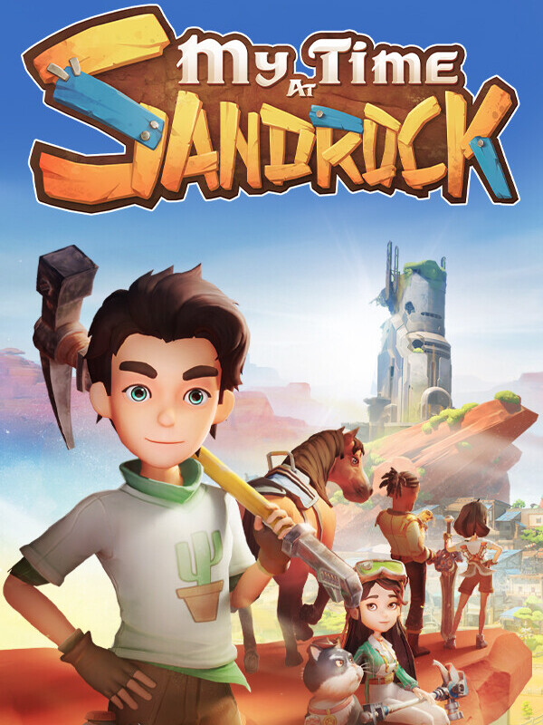

My Time at Sandrock
My Time at Sandrock
Details
|  | |
| Playtime | Not Played |
| Last Activity | Never |
| Added | 09/09/2025 17:13:14 |
| Modified | 09/09/2025 17:13:58 |
| Completion Status | Not Played |
| Library | Steam |
| Source | Steam |
| Platform | PC (Windows) |
| Release Date | 02/11/2023 |
| Community Score | 90 |
| Critic Score | 84 |
| User Score | |
| Genre | Adventure Indie Role-playing (RPG) Simulator |
| Developer | Pathea Games |
| Publisher | Pathea Games PM Studios |
| Feature | Co-Operative Multiplayer Single Player |
| Links | YouTube Subreddit GOG Steam Epic Official Website Discord Community Wiki Twitch Xbox Playstation Nintendo |
| Tag | |
Description
Want a bigger discount? Wishlist and follow us.
My Time at Sandrock-Just like My Time at Portia, My Time at Sandrock takes place in a wholesome post-apocalyptic world 330 years after the Day of Calamity destroyed most modern technologies.
After accepting a job offer to become Sandrock’s newest Builder, you’ll arrive in the wild and rugged city-state, where it’s up to you and your trusty tools to restore the community to its former glory. Gather resources to build machines, befriend locals, and defend Sandrock from monsters — all while saving the town from economic ruin!
Key Features

Transform a run-down workshop into a well-oiled production facility! Use an intricate set of machines to process materials and produce parts of huge structures before assembling them piece by piece to help Sandrock flourish.
Create hundreds of unique items at the worktable to decorate your homestead, give gifts to Sandrock’s residents, or assist with community requests.

Explore vast deserts surrounding the city-state of Sandrock. Dive into ruins to dig for Old World relics, seek our materials in hard-to-reach locations, or spend time relaxing in Sandrock with your neighbors.

Experience a detailed story complete with hundreds of sidequests and over 30 all-new characters. Spend time getting to know Sandrock’s residents, uncovering backstories, and making meaningful connections along the way.

Quickly shift between melee combat and third-person shooting mechanics in dynamic action battles.Use the new weapons and defense break mechanic to your tactical advantage, or boost your stats to simply smash through battles!

A diversity of mini-games allow you and local Sandrock residents to stay entertained in the desert town.
 Explore, build, and battle with up to 4 players. Together, shape the dynamic town, construct towering structures, engage in battles, share romantic moments, and dive into mini-games. Every move counts, earning points and unlocking new dimensions for your evolving character.
Explore, build, and battle with up to 4 players. Together, shape the dynamic town, construct towering structures, engage in battles, share romantic moments, and dive into mini-games. Every move counts, earning points and unlocking new dimensions for your evolving character.

Use your workshop’s profits to turn the empty prairie into farmable land;
Grow crops for extra cash or transform them into delicious dishes;
Attend festivals with Sandrock’s residents;
Find secrets and much more!
Both Portians and brand-new Builders who have never set foot in Portia will find a fun new world with lots to explore at their own pace, along with divergent NPC stories to enhance replayability. Experienced Builders will find everything you enjoyed about My Time at Portia and more, and you will feel right at home in the delightful life-sim RPG that is My Time at Sandrock.